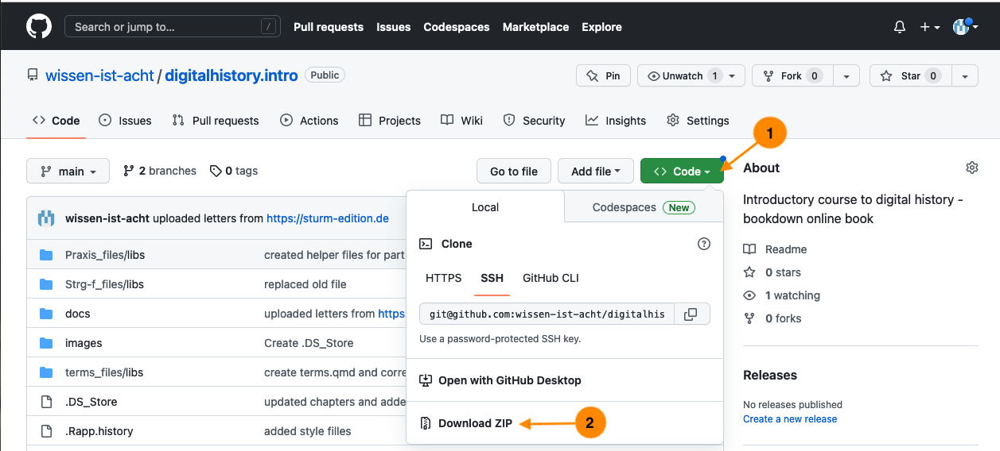

Durch die Hintertür
Bevor wir uns mit dem Beispielkorpus der Briefedition befassen, werfen wir einen kurzen Blick auf die Interaktionsmöglichkeiten mit dem Computer und wie wir diese für unsere Arbeit als Historiker:innen nutzen können, sei es für die Erhebung, die Aufbereitung oder die Analyse von Daten.
Es gibt zwei Arten, um mit einem Computer zu interagieren bzw. ihn zu nutzen: über ein Graphical User Interface (GUI), also vor allem mit der Maus und durch das Anklicken von Objekten, oder, etwas direkter, über die Kommandozeile1. Um via GUI eine Datei “Brief1.txt” im Ordner “Briefe” zu löschen, öffnet man den Finder (Mac), den Explorer (Windows) oder den Filebrowser der Wahl (Linux), klickt sich zum Ordner “Briefe”, macht einen Rechtsklick auf die zu löschende Datei “Brief1.txt”, klickt “In den Papierkorb legen” oder zieht die Datei mit der Maus direkt dorthin. Dieselbe Aktion kann man als Kommando schreiben: Man öffnet das Terminal (Linux oder Mac; den Finder öffnen und im Suchfenster “Terminal” eingeben und Programm öffnen) oder eine PowerShell (Windows; mit der rechten Maustaste auf das Startsymbol klicken, dann “Windows PowerShell” auswählen), navigiert im sich öffnenden Fenster mit Texteingabe zum entsprechenden Ordner, bspw. cd Documents/Briefe + ‘Enter’ und gibt dort das Kommando rm "Brief1.txt" ein, das mit der Entertaste ausgeführt wird.
(base) serina00@dg-19-mac-02 ~ % cd Documents/Briefe(base) serina00@dg-19-mac-02 Bilder % rm "Brief1.txt"Die beiden Vorgehensweisen unterscheiden sich dabei in drei Punkten:
- Das Kommando
rmist endgültig, die Datei ist ohne Übergangszeit im Papierkorb gelöscht. - Das Kommando lässt sich relativ simpel auf eine Vielzahl von Dokumenten anwenden, wobei ganz unterschiedliche Bedingungen beachtet werden können, und es lässt sich mit anderen Kommandos verbinden.
- Terminal sieht k3wl aus.
Bevor wir den zweiten – und für unsere Arbeit hilfreichsten – Unterschied genauer anschauen, kurz zur Kommandozeile.
Soweit nicht anders vermerkt, beziehen sich die Kommandos auf UNIX-basierte Shells, also für Mac- und Linux-Betriebssysteme. Bei den Aufgaben, die Sie selbst ausführen sollen, werden auch die Befehle für die Powershell von Windows angegeben.
Shell 101
In einem Terminal/einer Shell können Kommandos bzw. Programme ausgeführt werden, die auf der Datenstrukturebene stattfinden – wie beispielsweise das Löschen einer Datei, rm Dateiname.xyz (rm für remove), oder das Erstellen eines Ordners, mkdir NeuerOrdner (mkdir für make directory). Oder aber Operationen auf Dateninhaltsebene – wie beispielsweise das Suchen eines bestimmten Begriffs in einer Textdatei, grep Begriff Textdatei.txt, oder das Auszählen mehrerer Begriffe und das Speichern des Ergebnisses in einer neuen Datei, grep -Ec "Begriff1|Begriff2" Textdatei.txt > Ergebnisse.txt.
Woher weiss Ihre Shell aber, was sie ausführen soll, wenn Sie rm oder grep eintippen? Es gibt zahlreiche Shell-Programme, die bereits auf Ihrem System vorinstalliert sind, und mit denen Sie vieles tun können – öffnen Sie Ihre Shell und tippen Sie date ein: Das aktuelle Datum mit Uhrzeit erscheint. (Ihre Shell sucht nach dem ersten Argument, dem Befehl date, im Filesystem des Computers, und wenn sie fündig wird, führt sie eine Aktion mit den entsprechenden Parametern aus.)
tmi: Wenn Sie
echo $PATHim Terminal eingeben, sehen Sie eine Auflistung der Orte, an denen nach Befehlen gesucht wird. Tippen Siewhich dateein und drücken Sie ‘Enter’, um zu sehen, wo das Programm “date” in Ihrem Computer liegt.
Falls Sie einen Befehl eintippen, den es nicht gibt bzw. für den kein installiertes Programm auf Ihrem Computer existiert, bekommen Sie eine simple Fehlermeldung – kaputtgehen kann dabei nichts:
(base) serina00@dg-19-mac-02 ~ % nonsensecommand not found: nonsense“Strg-F 2.0”
Das aktuelle Datum wird Ihnen wahrscheinlich auch in Ihrer Toolbar angezeigt, und einen neuen Ordner können Sie per Rechtsklick erstellen, dazu brauchen Sie das Terminal nicht unbedingt. Um einen Begriff in einem Textdokument zu finden und alle Vorkommen zu zählen, können Sie das Dokument öffnen, Strg-F drücken, den Begriff eingeben und das Ergebnis sehen. Wenn Sie nach mehreren Begriffen suchen wollen, müssen Sie dieselbe Aktion zweimal ausführen: Strg-F, Begriff 2. Und wenn Sie mehrere Dateien durchsuchen möchten, beispielsweise um herauszufinden, wie oft die Grußformel “Mit herzlichem Gruß” in einer Briefsammlung vorkommt, müssen Sie die Suche in jeder Datei einzeln ausführen. Wenn Sie dann noch nach der Variante “Mit herzlichen Grüßen” oder gar “Herzl. Gruß” suchen wollen, vervielfacht sich Ihre Arbeit.
Sie können dasselbe auch mit dem Terminal machen und einige der Built-in-Programme nutzen, um sich Zeit und Arbeit zu sparen. Um die folgenden Schritte nachzuvollziehen, laden Sie sich den Ordner “letters_Der_Sturm” herunter. Sie können dazu entweder das vollständige GitHub-Repository zu diesem Guide als Zip-Datei herunterladen und entpacken, und im Ordner “docs” befindet sich der Ordner “letters_Der_Sturm”.

Sie können das Repositorium auch über die Kommandozeile klonen
(base) serina00@dg-19-mac-02 ~ % git clone https://github.com/wissen-ist-acht/digitalhistory.intro.gitoder als bequeme Variante diesen Direktlink nutzen.
Egal, wie Sie die Dateien heruntergeladen haben, sollten Sie 57 Briefe im Format xml vorfinden. Öffnen Sie dann das Terminal (Mac/Linux) bzw. die PowerShell (Windows) und bewegen sich mit cd, also change directory, in den Ordner (directory), in dem Ihre Textdateien liegen.
In meinem Fall ist das unter Documents – GitHub – digital_history_intro/docs/letters_Der_Sturm.
(base) serina00@dg-19-mac-02 ~ % cd Documents/GitHub/digital_history_intro/docs/letters_Der_Sturm`Bei den meisten von Ihnen ist das vermutlich unter “Downloads” – probieren Sie es aus.
(Um zu prüfen, was in einem Ordner liegt, können Sie im Terminal ls (für list) eingeben, bzw. in der PowerShell dir (für directory):
(base) serina00@dg-19-mac-02 letters_Der_Sturm % lsQ.01.19140115.FMA.01.xml Q.01.19150315.FMA.02.xml
Q.01.19140119.FMA.01.xml Q.01.19150327.FMA.01.xml
Q.01.19140121.FMA.01.xml Q.01.19150417.FMA.01.xml
Q.01.19140124.FMA.01.xml Q.01.19150501.FMA.01.xml
Q.01.19140125.FMA.01.xml Q.01.19150615.FMA.01.xml
Q.01.19140125.FMA.02.xml Q.01.19150703.FMA.01.xml
Q.01.19140409.FMA.01.xml Q.01.19150710.FMA.01.xml
Q.01.19140414.FMA.01.xml Q.01.19150818.JVH.01.xml
Q.01.19140421.FMA.01.xml Q.01.19150827.FMA.01.xml
Q.01.19140507.FMA.01.xml Q.01.19150906.FMA.01.xml
Q.01.19140512.FMA.01.xml Q.01.19150911.FMA.01.xml
...Erste Analysen
Wenn Sie in den Ordner navigiert sind, in dem die Briefdateien liegen, können Sie mit einem einzeiligen Kommando die Suchvorgänge, die Sie nacheinander mit Strg-F mit jeder einzelnen Datei in einem Texteditor ausführen würden, mit dem Programm grep (Global Regular Expression Print) für alle Briefe in diesem Ordner vornehmen, indem Sie alle Dateien, die auf “.xml” enden, in die Suche aufnehmen. Die Ergebnisse – bei dieser Suche ein Brief – können Sie sich im Terminal anschauen:
(base) serina00@dg-19-mac-02 letters_Der_Sturm % grep -E '(Mit herzlichem Gruß|Mit herzlichen Grüßen)' *.xml Q.01.19160115.FMA.01.xml: <salute>Mit herzlichen Grüßen für Sie beide</salute> <signed>Ihr <persName key="P.0000003" ref="http://d-nb.info/gnd/11857745X">F.Marc</persName>Die Formulierung “Mit herzlichen Grüßen” kommt also im Dokument Q.01.19160115.FMA.01.xml vor.
Sie können auch mit wc -l den Wordcount, die Anzahl der gefundenen Treffer auf Zeilenebene, -l zählen und mit > in eine neue Datei schreiben (die während der Ausführung des Kommandos erstellt wird):
(base) serina00@dg-19-mac-02 letters_Der_Sturm % grep -E '(Mit herzlichem Gruß|Mit herzlichen Grüßen)' *.xml | wc -l > count_greetings.txtWenn Sie die neue Datei count_greetings.txt öffnen, sollte sie “1” enthalten.
Das Kommando grep hat im obigen Befehl den Zusatzparamter E bekommen, d.h. die Begriffe, nach denen gesucht werden soll, sind Extended Regular Expressions – wir suchen als nicht eine exakte Zeichenkette, sondern Nutzen Möglichkeiten zur Mustersuche. Wir haben in unserer Suchabfrage nicht nur nach “Mit herzlichem Gruß” gesucht, sondern auch nach “Mit herzlichen Grüßen”, formuliert mithilfe des Zeichens “|”, hier als “oder” zu lesen. Mithilfe Regular Expressions können wir unsere Suche weiter ausbauen und nach verschiedenen Varianten/Schreibweisen auf einmal suchen:
(base) serina00@dg-19-mac-02 letters_Der_Sturm % grep -E '(Mit herzlichem Gru(ß|ss)|Mit herzlichen Grü(ß|ss)en|H(e|?*)rzl. Gru(ß|ss))' *.xml | wc -lSo formuliert finden wir 13 Treffer für eine Grußformel, mit den möglichen Schreibweisen “Mit herzlichem Gruß”, “Mit herzlichem Gruss”, “Mit herzlichen Grüßen”, “Mit herzlichen Grüssen”, “Herzl. Gruß”, “Herzl. Gruss”, “Hrzl. Gruß”, “Hrzl. Gruss”.
Wenn wir herausfinden möchten, ob Grüße mal herzlich, mal hrzl. oder freundlich verschickt wurden, können wir die Suche und die Art der Ausgabe modifizieren:
(base) serina00@dg-19-mac-02 letters_Der_Sturm % grep -E 'Gr(u|ü)(ß|ss)' *.xmlQ.01.19140115.FMA.01.xml: stets sofort antworte; es muß verloren gegangen sein. Grüßen Sie bitte D<hi rend="super">
Q.01.19140119.FMA.01.xml: <salute>Hrzl. Gruß</salute> <signed>Ihr <persName key="P.0000003" ref="http://d-nb.info/gnd/11857745X">F. Marc</persName>
Q.01.19140125.FMA.02.xml: <salute>Hrzl. Gruß</salute>
Q.01.19140421.FMA.01.xml: <closer>Gute Besserung <persName key="P.0000002" ref="http://d-nb.info/gnd/118891456">Ihrer Frau</persName> u. <salute>viel Grüße von mir</salute> <signed>Ihr <persName key="P.0000003" ref="http://d-nb.info/gnd/11857745X">Fz Marc</persName>
Q.01.19140507.FMA.01.xml: <salute>besten Gruß</salute>
Q.01.19140730.JVH.01.xml: herzlichsten Grüssen für Sie beiden</salute> <signed>Ihre <persName key="P.0000004" ref="http://d-nb.info/gnd/11854764X">Jacoba van<hi rend="underline">Heemskerck</hi>
Q.01.19140831.FMA.01.xml: <salute>Hrzl. Gruß von Eurem Freund in Waffen</salute> <signed>
Q.01.19140908.JVH.01.xml: <salute>Viele herzlichsten Grussen für Sie beiden</salute> auch von Frl
Q.01.19141113.FMA.01.xml: <salute>Hrzl. Gruß 1 x 2</salute> <signed>Ihr <persName key="P.0000003" ref="http://d-nb.info/gnd/11857745X">Fz. Marc</persName>
Q.01.19141129.JVH.01.xml: <salute>Viele herzliche Grüssen für Sie beiden</salute>
Q.01.19150112.FMA.01.xml: <salute>Hrzl. Gruß Ihnen beiden</salute>
Q.01.19150116.FMA.01.xml: <salute>Mit herzl. Gruß Ihnen beiden</salute> <signed>Ihr <persName key="P.0000003" ref="http://d-nb.info/gnd/11857745X">FrM</persName>.</signed>
Q.01.19150121.FMA.01.xml: <salute>Herzl. Gruß</salute> <signed>Ihr <persName key="P.0000003" ref="http://d-nb.info/gnd/11857745X">Fz. Marc</persName>
Q.01.19150131.JVH.01.xml: <salute>Viele herzliche Grüssen für Sie beiden</salute>
...Mit diesem Kommando durchsuchen wir also den Text nach dem Muster Gr(u|ü)(ß|ss), also Beginn mit Gr, dann folgt entweder ein u oder ein ü, dann entweder ein ß oder ss. Weil wir kein Wortende markiert haben (das ginge mit \b), werden auch “Grüße” oder fiktive “Grussapparaturen” gefunden.
Footnotes
Kommandozeile/Command Line, Bash, Shell oder Prompt finden sich oft als synonym genutzte Begriffe für Command Line Interfaces. Auf UNIX-basierten Betriebssystemen wie Mac OS und Linux ist das Terminal als Interface weit verbreitet; für Details: https://en.wikipedia.org/wiki/Command-line_interface#History. Windowsnutzer:innen kommen mit der PowerShell ganz gut zurecht, es empfiehlt sich eventuell die Installation von Cygwin oder MinGW, um mit einem UNIX-basierten Interface arbeiten zu können.↩︎